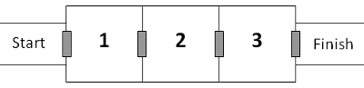

Project Euler 327
题目
Rooms of Doom
A series of three rooms are connected to each other by automatic doors.

Each door is operated by a security card. Once you enter a room the door automatically closes and that security card cannot be used again. A machine at the start will dispense an unlimited number of cards, but each room (including the starting room) contains scanners and if they detect that you are holding more than three security cards or if they detect an unattended security card on the floor, then all the doors will become permanently locked. However, each room contains a box where you may safely store any number of security cards for use at a later stage.
If you simply tried to travel through the rooms one at a time then as you entered room $3$ you would have used all three cards and would be trapped in that room forever!
However, if you make use of the storage boxes, then escape is possible. For example, you could enter room $1$ using your first card, place one card in the storage box, and use your third card to exit the room back to the start. Then after collecting three more cards from the dispensing machine you could use one to enter room $1$ and collect the card you placed in the box a moment ago. You now have three cards again and will be able to travel through the remaining three doors. This method allows you to travel through all three rooms using six security cards in total.
It is possible to travel through six rooms using a total of $123$ security cards while carrying a maximum of $3$ cards.
Let $C$ be the maximum number of cards which can be carried at any time.
Let $R$ be the number of rooms to travel through.
Let $M(C,R)$ be the minimum number of cards required from the dispensing machine to travel through R rooms carrying up to a maximum of $C$ cards at any time.
For example, $M(3,6)=123$ and $M(4,6)=23$. And, $\sum M(C,6)=146$ for $3 \le C \le 4$.
You are given that $\sum M(C,10)=10382$ for $3 \le C \le 10$.
Find $\sum M(C,30)$ for $3 \le C \le 40$.
解决方案
当$R< C$时，不难发现$M(C,R)=C+1$，这个人只需要一次拿完需要的卡就可以通过。
当$R\ge C$时，我们不能够一次过将所有卡带在身上了。因此还需要出门回到初始点取卡。在有$R$个房间的情况下，相当于先将足够的卡片先运到第$1$个房间；只要卡片足够了，那么接下来就变成了子问题$M(C,R-1)$。$M(C,R)$取决于$M(C,R-1)$.
此时需要的卡多于$C$张，需要多次进出房间，那么实际上每次只能运进去$C-2$张卡片。并且在最后一次运送时，由于已经不再打算出来，那么实际运进去的卡片就有$C-1$张。因此最后一次运送需要额外处理。
除去最后一次运送的$C-1$张卡片，那么剩下的$f(C,R-1)-(C-1)$张卡片每次实际运送$C-2$张。不足$C-2$张则下次补上。
需要注意的是，实际上，每一次的运送过程都是取$C$张卡片进行。
本题其实还是使用了动态规划的思想。
假设$C\ge 3,R\ge 0$，那么可以写出$M(C,R)$的状态转移方程：
其中$t(x)$表示如果$x=0$，那么$t(0)=0$，否则$t(x)=x+2$.
代码
1 |
|